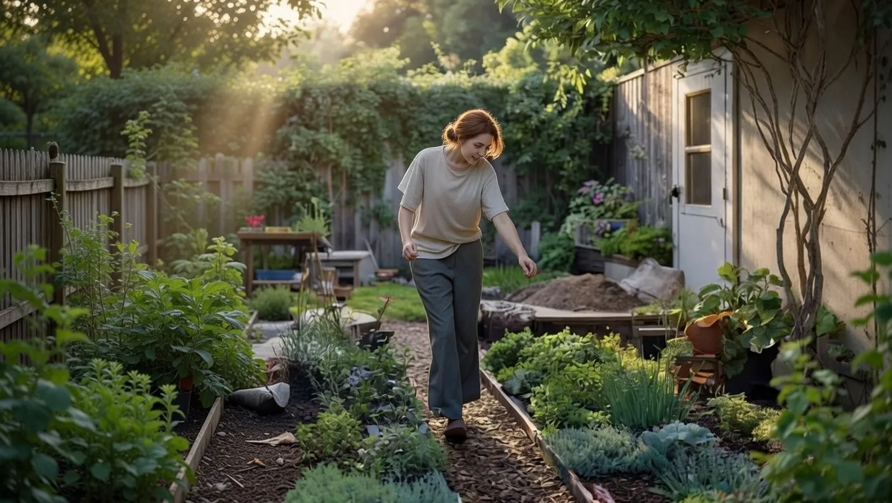

The Tiny Gardening Mindset Shift That Will Completely Transform Your Backyard Forever


As the world becomes increasingly urbanized, many of us are left with small outdoor spaces that can feel cramped and uninviting. However, with a tiny gardening mindset shift, it's possible to transform even the smallest backyard into a beautiful and functional oasis. This approach involves rethinking the way we use our outdoor spaces and embracing the unique challenges and opportunities that come with small-scale gardening.
The tiny gardening mindset shift is all about maximizing the potential of your outdoor space, no matter how small it may be. By adopting a few key principles and strategies, you can create a thriving and sustainable garden that not only looks great but also provides a range of benefits for you and the environment. In this article, we'll explore the what, why, and how of tiny gardening, and provide you with the inspiration and guidance you need to get started.
Table of Contents
Understanding the Tiny Gardening Mindset
The tiny gardening mindset is all about embracing the unique challenges and opportunities of small-scale gardening. It involves adopting a flexible and adaptable approach, being willing to experiment and try new things, and focusing on creating a functional and sustainable outdoor space. This mindset shift requires a fundamental change in the way we think about gardening and our relationship with nature. Rather than trying to control and dominate the natural world, tiny gardening is about working with nature to create a harmonious and thriving ecosystem.
One of the key principles of tiny gardening is the idea of "less is more." This means embracing simplicity and minimalism in our garden design, and focusing on a few high-impact elements rather than trying to include everything. By keeping things simple, we can create a more manageable and sustainable garden that requires less maintenance and resources. Another important principle is the idea of "stacking functions," which involves using each element in the garden to perform multiple functions. For example, a garden bed can provide food, attract pollinators, and create a natural barrier against pests and diseases.
The tiny gardening mindset also involves being mindful of the environmental impact of our gardening practices. This means using sustainable materials, conserving water, and reducing waste. By adopting eco-friendly practices, we can create a garden that not only looks great but also provides a range of benefits for the environment. Some examples of sustainable gardening practices include using rainwater harvesting systems, composting food waste, and incorporating native plants into our garden design.
Applying the Tiny Gardening Mindset
So how can you apply the tiny gardening mindset to your own backyard? The first step is to assess your outdoor space and identify its unique challenges and opportunities. Consider the amount of sunlight your garden receives, the type of soil you have, and the local climate and weather patterns. Once you have a good understanding of your garden's conditions, you can start thinking about how to maximize its potential. This might involve creating a garden design that incorporates a mix of plants, using vertical space to add more growing area, and incorporating features such as paths, seating areas, and water features.
Another important aspect of applying the tiny gardening mindset is being willing to experiment and try new things. This might involve trying out new plants, testing different gardening techniques, and incorporating new materials and features into your garden design. By being open to new ideas and approaches, you can create a unique and thriving garden that reflects your personality and style. Some examples of experimental gardening techniques include using hydroponics or aquaponics, incorporating mushrooms into your garden design, and creating a "polyculture" garden that features a diverse mix of plants and animals.
It's also important to remember that tiny gardening is a process, and it's okay to make mistakes and learn as you go. Don't be afraid to try new things and take risks – it's all part of the journey. And don't worry if your garden doesn't look perfect at first. With time and practice, you'll develop the skills and knowledge you need to create a thriving and sustainable outdoor space.
| Gardening Technique | Description | Benefits |
|---|---|---|
| Hydroponics | A method of growing plants in a nutrient-rich solution rather than soil | Increased crop yields, reduced water usage, improved plant health |
| Aquaponics | A method of growing plants and raising fish together in a recirculating system | Increased crop yields, reduced water usage, improved fish health |
| Polyculture | A method of growing multiple plants and animals together in a diverse and interconnected system | Improved biodiversity, increased crop yields, reduced pest and disease pressure |
Also Read
More trending stories →Creating a Thriving Tiny Garden
Creating a thriving tiny garden requires a combination of planning, creativity, and hard work. Here are some tips to get you started:
- Start small and focus on a few key elements, such as a garden bed or a container garden
- Choose plants that are well-suited to your climate and soil type
- Incorporate a mix of plants, including flowers, herbs, and vegetables
- Use vertical space to add more growing area, such as trellises or wall-mounted planters
- Incorporate features such as paths, seating areas, and water features to create a functional and enjoyable outdoor space
By following these tips and embracing the tiny gardening mindset, you can create a thriving and sustainable garden that provides a range of benefits for you and the environment. Remember to be patient, stay flexible, and have fun – tiny gardening is a journey, not a destination.
Key Takeaways
- The tiny gardening mindset involves embracing simplicity, minimalism, and sustainability in our garden design
- Applying the tiny gardening mindset requires assessing our outdoor space, experimenting with new techniques, and being open to new ideas and approaches
- Creating a thriving tiny garden requires a combination of planning, creativity, and hard work, as well as a willingness to learn and adapt
Frequently Asked Questions
What is the tiny gardening mindset?
The tiny gardening mindset is an approach to gardening that involves embracing simplicity, minimalism, and sustainability in our garden design. It requires a fundamental change in the way we think about gardening and our relationship with nature.
How can I apply the tiny gardening mindset to my own backyard?
To apply the tiny gardening mindset to your own backyard, start by assessing your outdoor space and identifying its unique challenges and opportunities. Consider the amount of sunlight your garden receives, the type of soil you have, and the local climate and weather patterns. Then, start thinking about how to maximize its potential by creating a garden design that incorporates a mix of plants, using vertical space to add more growing area, and incorporating features such as paths, seating areas, and water features.
What are some examples of sustainable gardening practices?
Some examples of sustainable gardening practices include using rainwater harvesting systems, composting food waste, and incorporating native plants into our garden design. These practices can help reduce our environmental impact, conserve resources, and create a more sustainable and thriving garden.
Conclusion
The tiny gardening mindset offers a powerful approach to transforming our backyards into thriving and sustainable outdoor spaces. By embracing simplicity, minimalism, and sustainability, we can create gardens that not only look great but also provide a range of benefits for the environment. Whether you have a small balcony or a large backyard, the tiny gardening mindset can help you make the most of your outdoor space and create a beautiful and functional oasis. With its focus on experimentation, creativity, and sustainability, tiny gardening is an approach that can be applied to any garden, regardless of size or style.
Sarah Mitchell
Senior Tech Editor
Tech journalist with 8+ years of experience covering the latest in smartphones, EVs, AI, and consumer electronics. Bringing you accurate, well-researched stories from the world of technology.
Leave a Comment